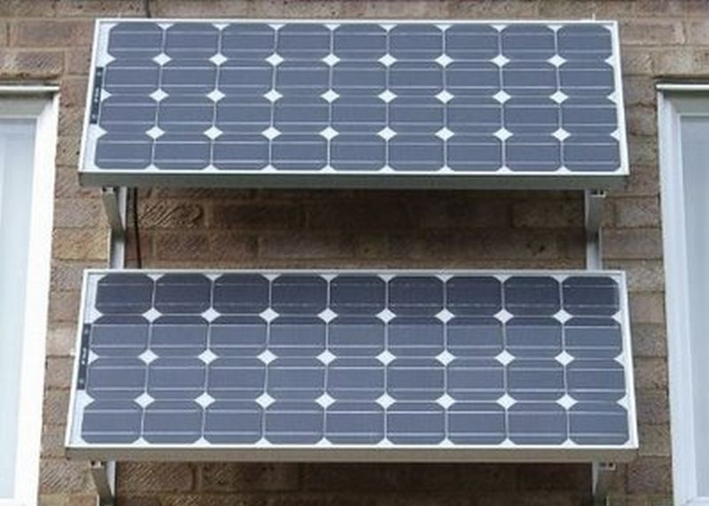

Солнечные батареи
Солнечные батареи могут использоваться для обеспечения электрической энергией загородных домов, коттеджей и дачных поселков. Мобильные дома, а также постройки, расположенные вдали от основных линий электропередач. Санатории, дома отдыха и другие учреждения. Одним словом везде, где есть место для установки панелей, и имеется потребность в дополнительном источнике энергии.
Преимущества
1. Солнце есть практически везде. Пока есть доступ к солнечному освещению, электроэнергия может быть получена при помощи данных устройств.
2. Автономность. Нет надобности в подключении к централизованной системе электроснабжения. Соответственно, можно снизить общие расходы на содержание дома. Нет нужды зависеть от ценовой политики местных энергетических магнатов.
3. Когда нужно подводить электрокабель в отдаленные деревни и фермы, порой намного дешевле установить солнечные батареи. Подсчитайте стоимость кабеля, столбов, техники и рабочих, и получится, что при меньшей волоките можно получить ту же услугу, и при этом быть самому себе хозяином.
4. Экологичность. Это основное преимущество данной технологии. Нет нужды использовать ископаемые ресурсы, которые, как известно, не возобновляются. Фотоэлементы не производят канцерогенных выбросов, не повышают уровень парниковых газов. Для их постоянной работы нет необходимости уничтожать и без того уже потрепанные лесные массивы.
Недостатки
1. Самый первый недостаток — необходимость первоначальных больших инвестиций, которые не требуются при обычном подключении к центральной электросети. Также срок окупаемости вложений, в электросеть с солнечными батареями, весьма размытый, ведь всё зависит от факторов, которые не зависят от потребителя.
2. Низкий уровень КПД. Один квадратный метр солнечной батареи средней производительности выдаёт всего лишь около 120 Вт мощности. Солнечные панели имеют значительно меньший КПД в сравнении с традиционными источниками энергии — около 14-15%. Однако этот недостаток можно считать достаточно условным, ведь новые технологии постоянно увеличивают этот показатель и развитие не стоит на месте.
3. Эффективность работы зависимая от погодных условий и климата. Солнечные батареи теряют свою эффективность во время пасмурной погоды или в тумане. Также при низких температурах, в зимнее время, КПД солнечных батарей падает. А если панель недостаточно хорошего качества, то и при высоких температурах. Также немаловажно, что солнечные панели могут по разному работать в разных широтах планеты. Эффективность солнечной системы также зависит и от месторасположения вашего дома.